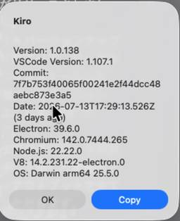

ForgeVision Engineer Blog
https://techblog.forgevision.com/
フォージビジョン エンジニア ブログ
フィード

Kiro for iOS のベータ版を使って、移動中にアプリを作ってみた
ForgeVision Engineer Blog
こんにちは、AWS グループの尾谷です。Kiro for iOS の招待メールが届いたので、移動中にアプリを作ってみました
6日前

AWS Blocksを実務で使うために、カスタマイズ境界を整理・検証してみる
ForgeVision Engineer Blog
こんにちは、AWSグループの藤岡です。 2026年6月に、AWS上でアプリケーションを構築するための新しいバックエンドツールキットの AWS Blocks が登場（プレビュー）しました。 docs.aws.amazon.com 認証やキーバリューストア、Pub/Subなど、機能レベルでの抽象度でインフラをサクッと構築できるというのがウリで、バックエンド出身の私には非常に魅力的なツールに伺えます。 すでに「AWS Blocksとは何か」「同じコードがローカルとAWSで動く仕組み」「CDKとの関係」といった入門・仕組み解説の記事がちらほら世間で出てきているように思われます。 そこで本記事では、私自…
11日前
中学生が生成AIでWebアプリ開発を体験——“考えを形にする”職場体験を実施しました
ForgeVision Engineer Blog
1.はじめに 生成AIとアプリ開発の体験 こんにちは、フォージビジョンの今田です。 これまで弊社が協力させていただいていた三輪田学園様との職場体験について今回はブログ記事を書かせていただきます。 今年は本社と分社の2拠点で同時に実施し、引率の先生1名と合計10名の中学生の皆さんに参加いただきました。 本記事では、そのうち分社に来訪した5名の生徒さんとの取り組みについて紹介します。 分社では講師2名と補助スタッフ2名のサポート体制のもとワークショップを実施しました。 今回のテーマは「生成AIを使ってWebアプリを作ること」です。 アイデアを考え、それをプロンプトとして言語化し、実際に動く形にして…
11日前
FSx for NetApp ONTAPのキャパシティプールでデータ削除したらどうなる？検証してみた
ForgeVision Engineer Blog
はじめに Amazon FSx for NetApp ONTAP（以下、FSxN）のキャパシティプールストレージは、S3のような実使用量ベースの課金です。SSDストレージがプロビジョニングした容量に対して課金されるのとは対照的に、キャパシティプールは「実際に使っている分だけ払う」モデルです。 そこで素朴な疑問が浮かびました。 アプリでデータを削除したら、キャパシティプールの使用量（コスト）はすぐ下がるのか？ 結論から言うと「下がるが、すぐではない」です。理由はスナップショットとFabricPoolの内部動作にあります。本記事では実際に検証した結果をログとともに紹介します。 FSxNのキャパシテ…
23日前
炎上案件を、お寺で供養する - 数年ぶりに連絡したお坊さんと、AIでお寺アプリを「建立」している話
ForgeVision Engineer Blog
こんにちは！世界遺産「佐渡島の金山」で有名になっちゃった佐渡島で、半農半エンジニアをやっている矢部です。今日は炎上案件を、お寺で供養するアプリの紹介します。
24日前
AWS Summit Japan 2026 出展・現地レポート
ForgeVision Engineer Blog
①はじめに 6月25日(木)と26日(金)の2日間にわたり、幕張メッセで開催された「AWS Summit Japan 2026」にフォージビジョンがブロンズスポンサーとして出展しました。 朝の海浜幕張駅はすでに長い待機列ができており、会場へ向かう段階からイベントの規模と熱量を実感するようなスタートでした。入場後も人の流れは途切れず、基調講演を目指す来場者で会場全体が一体となって動いている印象でした。 今回特に強く感じたのは、クラウドや生成AIといった抽象的な技術が実際の社会の中で具体的なプロダクトやITインフラとして成立していることでした。 本記事では、その会場の空気感とともに、フォージビジョ…
24日前
Kiro CLI V3 がやってくる - 主な変更点と注意点まとめ
ForgeVision Engineer Blog
こんにちは、AWS グループの尾谷です。 Kiro CLI V3 が Early Access として公開されました。ドキュメントを読む限り、v2 からかなり大きく変更されるようだったので、急ぎ調査してみました。
1ヶ月前
How I Built Honraku Taro — My #H0Hackathon Journey
ForgeVision Engineer Blog
※ This article was written for the purpose of participating in the hackathon H0: Hack the Zero Stack with Vercel v0 and AWS Databases. #H0Hackathon What is the H0 Hackathon? H0 (Hack the Zero Stack) is a hackathon co-hosted by AWS and Vercel. Its defining feature is a focus on a specific combination…
1ヶ月前
【第6回XR・メタバース総合展】XRとAIの接点に見る体験技術の現在地
ForgeVision Engineer Blog
①はじめに 先日、第6回XR・メタバース総合展を見学する機会がありました。 AI技術の進展とあわせて、XR領域でもさまざまな取り組みが進んでおり、「どのように業務や体験に活用していくか」という視点での展示が多く見られました。 全体としては、技術そのものの高度化というよりも、実際の利用シーンをどう設計するかに焦点が移ってきている印象でした。 ②会場全体の印象 会場で特に関心が集まっていたのは、実際に体験できるVRコンテンツやデバイス展示でした。 具体的には以下のような領域です。 業務トレーニング（避難訓練や技能教育など） 不動産や施設のバーチャル内覧 スマートグラスなどのウェアラブルデバイス体験…
1ヶ月前
Honraku Taroを作った話 〜#H0Hackathon参加記〜
ForgeVision Engineer Blog
※この記事はH0: Hack the Zero Stack with Vercel v0 and AWS Databasesというハッカソンへの参加を目的として執筆しました。#H0Hackathon H0ハッカソンとは H0(Hack the Zero Stack)は、AWSとVercelが共同開催しているハッカソンです。特定の技術スタックの組み合わせに焦点を当てているのが特徴で、v0(VercelのAI UIジェネレーター)で素早く作ったNext.jsフロントエンドを、Amazon Aurora PostgreSQL、Aurora DSQL、Amazon DynamoDBのいずれかのAWSデ…
1ヶ月前
【AINativeEXPO2026】DXの延長にAIはない～自律エージェントが変える「業務の実行主体」と組織の再設計～
ForgeVision Engineer Blog
1. 導入（イントロダクション） 先日開催された『AINativeEXPO2026』では、AIの位置づけが大きく変化していることが明確に感じられました。従来のような「業務支援ツールとしてのAI」ではなく、業務そのものを実行する“エージェント型AI”が中心テーマとなりつつありました。 会場では様々な製品のデモや展示が行われていました。その多くは複数のAIエージェントが並列でタスクを処理し、短時間で資料作成やプロトタイプ生成まで完了させるという内容でした。一方でその裏側では、「生成物の増加に対してレビューや承認が追いつかない」という新しいボトルネックも同時に議論されていました。 本記事では、この変…
1ヶ月前
「AI導入」から「業務構造の刷新」へ。BoxWorks Tokyo2026で紐解く組織のAI Ready化
ForgeVision Engineer Blog
1. 導入(イントロダクション) こんにちは、フォージビジョンの今田です。 生成AIの実用化から数年が経ち、多くの企業が「AIをどう業務に組み込むか」という試行錯誤を続けています。 しかし、新しいツールを導入してみたものの、現場に定着しなかったり、期待したような生産性向上が得られなかったりと、もどかしさを感じているIT部門の方も多いのではないでしょうか。 生成AIの実用化から数年、テクノロジーの進化がBoxにどのような力学の変動をもたらしているのか。 その最前線を確認すべく、6月4日のDay0オンライン、6月5日のプリンスパークタワー東京で開催された「BoxWorks Tokyo 2026」D…
1ヶ月前
AWSのKiro Webを「うちのリポジトリの同僚」にしたら、Issue起票がそのままPRに化けた話
ForgeVision Engineer Blog
どうも、佐渡島の半農半エンジニアです。Kiro Web の自走力について実体験からレビューします。
2ヶ月前
ODEX｜デジタル化・DX推進展、参加レポート
ForgeVision Engineer Blog
こんにちは、フォージビジョンの今田です。 今月5月13日(水)から15日(金)に、ODEX｜デジタル化・DX推進展（東京ビッグサイトの西ホール）で開催されました。 昨今、AI技術の進化やDX推進の波が目まぐるしいですが、ネット上の情報だけでなく、実際の現場の熱量や最新トレンドを直接肌で感じ、 社内外の皆さまに有益な情報として還元したいという思いから、今回から来場者として参加した展示会のレポートとして、アウトプットします。 ODEXに足を運んでみて、エンジニアや情シス担当者だけでなく、営業や人事など幅広いビジネスパーソンにこそ知ってほしい『大きな波』を感じ、 会場全体としても非常に活気のある印象…
2ヶ月前
Agent Plugins for AWS を安全に使うための Claude Code 制御レイヤー設計 （第2回：Sensor編）
ForgeVision Engineer Blog
こんにちは、AWSグループの藤岡です。 前回の記事では、Claude Codeに Agent Plugins for AWS をセットアップし、CDKコード生成を検証しました。 techblog.forgevision.com 検証にあたって、以下2つの条件で生成結果を比較しました。 ①プラグインのみ ②プラグイン + Guide Layer 有り 生成されたCDKファイルを見て、「②プラグイン + Guide Layer 有り」では実務では注意したいリソース設定が改善されていることを確認しました。 第2回となる本記事では、以下を実施します。 Claude Code Hooks を使った Se…
2ヶ月前
使わない手はない！追加料金なしで利用できる Orca Security MCP Server を Kiro IDE で使ってみた
ForgeVision Engineer Blog
こんにちは、Orca Security 担当の尾谷です。Orca Security が提供する MCP Server は、現時点でクレジットを消費しません。これは使わないという選択肢がないと思います。
2ヶ月前
Kiro Web が公開されたので、コーポレートサイトを勝手にこそっとリデザインしてもらった
ForgeVision Engineer Blog
こんにちは、AWS グループの尾谷です。今週、Kiro Web がプレビュー公開され、Kiro Pro / Pro+ / Power プランで利用できるようになったので、会社のホームページを無断でリデザインしてもらうことにしました。
3ヶ月前
【要対応】Kiro のファイアウォール設定、5/15 までに更新が必要です
ForgeVision Engineer Blog
こんにちは、AWS グループの尾谷です。 Kiro からの公式アナウンスで、サービス基盤の移行に伴うファイアウォール設定の変更依頼が届いたので、内容を調べてみました。
3ヶ月前
Codex pets でフォージくんをデスクトップに！
ForgeVision Engineer Blog
こんにちは！AWSグループの藤岡です。 OpenAIのエージェントアプリ Codex で、面白いアップデートが発表されました。 developers.openai.com デスクトップに常駐する"ペット"が、Codexで指示した作業進捗に応じてリアクションしてくれます。 これはぜひ試したい！と思い、弊社キャラクターのフォージくんでCodex petsを試してみました。 Codexのインストール Codexのセットアップ ペットの呼び出し hatch-pet Skill のインストール ペットの作成を指示する 出来上がり まとめ Codexのインストール 公式サイトから、Codexアプリケーショ…
3ヶ月前
Claude Codeで作ったシミュレーションRPG風ゲームをKiroで再実装してみた～設計のみを流用した仕様駆動開発の品質検証～
ForgeVision Engineer Blog
こんにちは、こんばんわ！クラウドインテグレーション事業部の魚介系エンジニア松尾です。 今回はClaude Codeで作った某シミュレーションRPG風ゲームをKiroに設計だけ渡してみてどういったものが出来上がるのかを検証してみたので、その際に感じた各ツールの所感について共有させていただきます。 はじめに～なぜ同じゲームを2つの生成AIツールで作ったのか～ 背景 疑問 本記事のゴール Claude Codeで完成したゲームの紹介 ゲーム仕様 最終的な仕上がり Claude Codeでの開発プロセス振り返り 基本的な開発の進め方 Kiroへの移行～設計資産をどう渡したか～ 移行で利用したファイル群…
3ヶ月前
【管理者向け完全解説】Kiro Organizations の Settings で設定できる全項目まとめ
ForgeVision Engineer Blog
こんにちは、AWS グループのホンドウです。私ごとですが、IAM Identity Center を用いて、会社のメンバーが利用する Kiro のサブスクリプションを管理するようになり、設定についていろいろ学びました。本ブログでは、管理者向けに Kiro Organizations の Settings で設定できる全項目をご紹介したいと思います。
3ヶ月前
Agent Plugins for AWS を安全に使うための Claude Code 制御レイヤー設計 （第1回：Guide編）
ForgeVision Engineer Blog
こんにちは、AWSグループの藤岡です。コード実装もインフラ構築も、AIに任せる範囲が日々増えていくのを体感しています。 2026年2月にAWSから「Agent Plugins for AWS」が発表されました。これによってAIエージェントが、AWSが推奨するプラクティスに沿って、IaCを実装したりデプロイを実行できるようになりました。 aws.amazon.com AIが強力になることは嬉しい一方で、安全な範囲で作業させるための制御はより重要になっています。特にAWSリソースの操作は、一つのミスが既存環境への影響や、セキュリティリスク、予期せぬコスト増大につながる可能性があります。 そこで本記…
3ヶ月前
AWS の Kiro で AI-DLC をやってみたら、おひとり様でも”非同期コラボ”が捗った話
ForgeVision Engineer Blog
どうも、佐渡島の半農半エンジニアです。AWSが提唱しているAI-DLC（AI-Driven Development Life Cycle）を、本家AWS謹製のIDE「Kiro」でやってみたという話をご紹介します。
3ヶ月前
Kiro Powers vs Skills — TerraformエンジニアがIaCの観点で検証した
ForgeVision Engineer Blog
はじめに こんにちは、クラウドインテグレーション事業部の遅れてきたルーキー八木です。 昨今の生成AIのアップデートはまさに指数関数的な進化を見せておりますが、われらがKiroも昨年のリリース以来、凄まじい速さでアップデートをつづけております。 2025年のre:Invent にて、Kiro Powersが登場したのも束の間、2026年に入って早々、Skillsという機能が追加されました。 1月16日に Kiro CLIのバージョンアップに伴い Skills が追加 2月5日にKiro IDEでAgents Skillsがサポート 今回は、特に後者のKiro IDEのAgents Skillsを…
4ヶ月前
Kiro の MCP 確認を減らして開発速度を上げる方法（autoApprove / Autopilot 解説）
ForgeVision Engineer Blog
こんにちは、AWS グループの尾谷です。Kiro をテンポよく使う方法とテンポよく仕事をこなす方法論を語ってみました。
4ヶ月前
Apache Iceberg Materialized Viewを試してみた② - MVを外部参照する -
ForgeVision Engineer Blog
こんにちは、開発グループの寺田です。 この記事では前回に引き続き、AWS Glue の Apache Iceberg Materialized View（以下 MV）の検証をまとめています。 はじめに この記事のゴール 検証環境 前提条件 IAM ロールに必要な権限 Lake Formation での権限付与 Athena クエリ結果の出力先 S3 バケット Lambda スクリプト 基本構成 スクリプト（全体） 実行結果の確認 実装のポイントまとめ まとめ 参考リンク はじめに 前回の記事では、AWS Glue Job を使って Apache Iceberg の Materialized V…
4ヶ月前
KiroとDraw.ioでAWS公式アイコンを使ったアーキテクチャ図を自動生成する
ForgeVision Engineer Blog
こんにちは、開発グループの寺田です。 皆さんはAWSのアーキテクチャ図をどのように作っていますか？ Draw.ioやLucidchartを使っている方も多いと思いますが、「もっと楽に、かつ品質の高い図を作れないか」と感じたことはないでしょうか。 そこで今回はKiroとDraw.ioで楽にAWSのアーキテクチャ図を生成できるか検証してみます。今回の検証ではハイブリッドアプローチ（人間とKiroで役割分担する方法）に落ち着きましたが、ステアリングファイルの整備やプロンプトの工夫次第ではさらに自動化できる可能性を感じています。躓いた点も含めて共有します。 この記事でわかること 前提条件 Step 1…
4ヶ月前
Apache Iceberg Materialized Viewを試してみた① - Glue Job でMVを作る -
ForgeVision Engineer Blog
こんにちは、開発グループの寺田です。 この記事では AWS Glue の Apache Iceberg Materialized View を実際に動かした検証をまとめています。 はじめに ユースケースのイメージ 検証環境 前提条件 Glue バージョンは 5.1 以上が必須 ソーステーブルは Iceberg 形式で用意する Glue Job の設定 MV 作成スクリプト CREATE MATERIALIZED VIEW の構文 Glue Job スクリプト（全体） 実装上の制約 実装のポイントまとめ FROM 句は 3 階層フルパスで書く DROP IF EXISTS で冪等性を確保する 作…
4ヶ月前
ココアを飲みながら、KiroのSpecモードでアプリを作る
ForgeVision Engineer Blog
AWSグループのホンドウです。今回もKiroでやってみたことについて書かせていただきます。
4ヶ月前
続・世界遺産の島の半農エンジニアがKiro×Bedrockで観光スタンプラリーを育てた話 〜古文書もAIもグループ対戦も全部入り、でも一番キツかったのは人間の脳だった〜
ForgeVision Engineer Blog
こんにちは！佐渡島の半農半エンジニア、矢部です。前回のブログでは、GPS×AI画像認証の「二重認証スタンプラリー」をKiroとAmazon Bedrockで作った話を書きました。今回はその「その後」の話です。
4ヶ月前